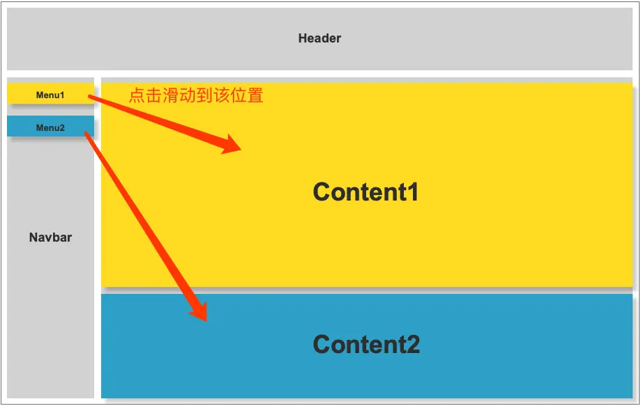

最近项目中遇到传统的锚点问题。那什么是锚点问题呢？
锚点 是网页制作中超级链接的一种，又叫命名锚记。命名锚记像一个迅速定位器一样是一种页面内的超级链接，运用相当普遍。并且可以对网站内容通过菜单进行快速定位。
 上图所示为锚点示意图，那这种需求我们怎么实现呢？下面我就来提供一些在不同场景下，可以使用的锚点方式。
1. 使用 a 标签
使用 a 标签实现锚点，href属性指向需要锚点的标签 id，代码如下：
<a href="#content1">Menu1</a>
<a href="#content2">Menu2</a>
<div id="content1">Content1</div>
<div id="content2">Content2</div>
2. 使用 js scrollTop
使用 scrollTop 的情况一般适用于固定页面元素的锚点设置，或者设置返回顶部按钮。
// 通过element.scrollTop来获取当前元素滚动条高度
// 可以在控制台输出下
document.documentElement.scrollTop ====> number
// 返回一个number类型的内容，是滚动条的高度
// 也可以通过给scrollTop赋值去设置滚动条高度
// 在控制台输出
document.documentElement.scrollTop = 0
// 会发现已经滚动的滚动条，滚动到页面最顶端。
由于不同的浏览器支持不同，需要考虑浏览器兼容性问题
// 获取滚动条高度兼容性写法
let scrollTop = document.documentElement.scrollTop || window.pageYOffset || document.body.scrollTop;
3. 使用 scrollIntoView 属性
scrollIntoView属性目前在主流浏览器中支持良好，在 android、ios 中也得到支持，如果不考虑老版本兼容可以直接使用，支持版本
使用方法：
// 将某个元素跳转到浏览器视口的最上方
// 等同于element.scrollIntoView(true)
element.scrollIntoView();
// Boolean型参数
// true 元素的顶端将和其所在滚动区的可视区域的顶端对齐 ； false 元素的底端将和其所在滚动区的可视区域的底端对齐
element.scrollIntoView(alignToTop);
// 一个带有选项的object：
// {
// behavior: "auto"(默认) | "instant" | "smooth"(缓动),
// block: "start" | "end",
// }
element.scrollIntoView(scrollIntoViewOptions); // Object型参数
4. 缓慢滚动css属性
基本锚点功能已经实现，但是在某些情况下，我们需要实现的是缓慢滚动，而不是瞬间滚动。 可以在样式中使用scroll-behavior修改滚动表现
scroll-behavior: smooth; // 滚动条缓慢滚动